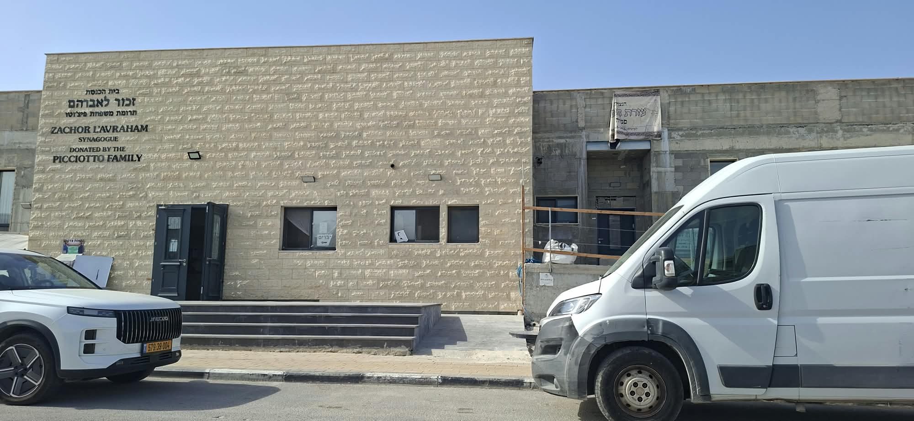
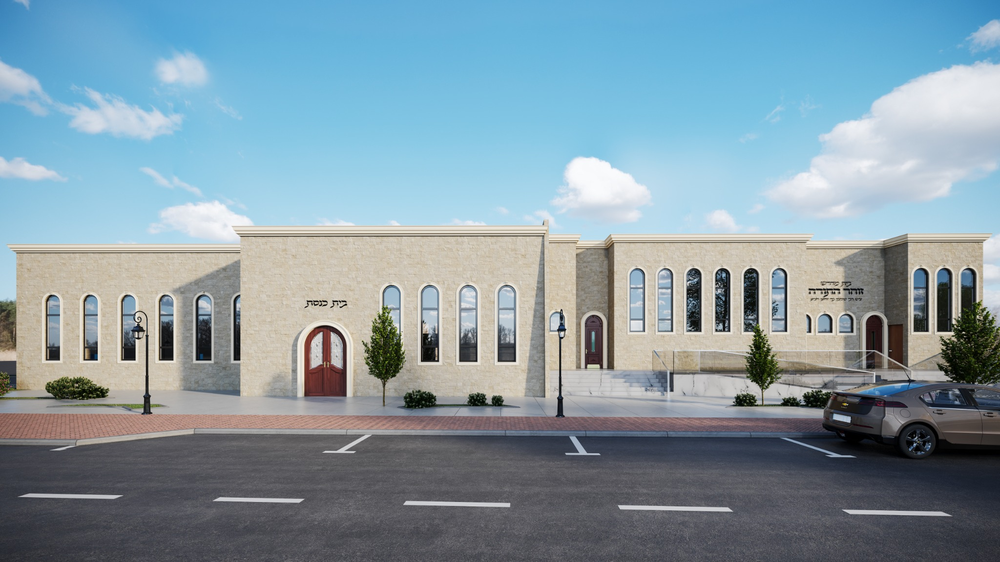
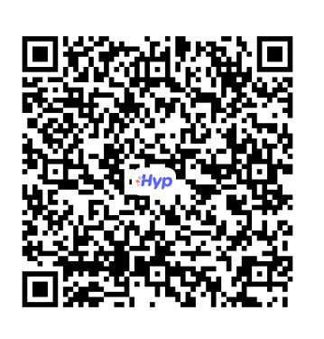

מוסדות זוהר התורה
בית שאן
מוסדות תורה וחסד הפועלים למען חיזוק התורה, תמיכה וסיוע בקהילה, מתוך אחריות ונתינה.
לתרומה מאובטחת באשראילהיכרות עם המוסדותעשייה של תורה וחסד בבית שאן
מוסדות זוהר התורה בית שאן פועלים ללא מטרות רווח למען מטרות תורה וחסד, חיזוק הקהילה וסיוע לנזקקים.
העמותה בעלת אישור לפי סעיף 46 לעניין תרומות המזכות בהטבת מס, בכפוף להוראות הדין ולאישור התקף.
בראש העמותה עומד יו״ר העמותה ומנהל המוסדות, הרב מאיר אסרף הי״ו.
פרטי העמותה
תורה, חסד ועזרה לזולת
מגוון מסגרות ופעילויות למען הציבור והקהילה.
כולל אברכים
מסגרת לימוד תורה לאברכים והעמקת עולם התורה.
כולל גמלאים
מסגרת לימוד וחיבור לתורה עבור ציבור הגמלאים.
גמ״ח וסיוע לנזקקים
סיוע, תמיכה ועזרה למשפחות ולאנשים הזקוקים לכך.
קירוב
פעילות לחיזוק הקשר לתורה ולמסורת.
מוסדות תורה
פעילות תורנית וחינוכית בהתאם לצורכי הקהילה.
פעילות חסד
יוזמות של נתינה, ערבות הדדית וחיזוק הקהילה.
מוסדות זוהר התורה – היום ובעתיד
תיעוד המבנה הקיים לצד ההדמיה של המבנה המתוכנן.


תרומה למוסדות זוהר התורה
להעברת תרומה ניתן לסרוק את הברקוד או ללחוץ על כפתור התשלום המהיר. לקבלת פרטים וסיוע בהעברה ניתן להתקשר לרב מאיר אסרף.
העמותה בעלת אישור סעיף 46 – זיכוי מס בהתאם להוראות הדין ולאישור התקף.
תרומה מאובטחת באשראי
למעבר לתשלוםיצירת קשר
לפרטים נוספים, שיתופי פעולה ותרומות.